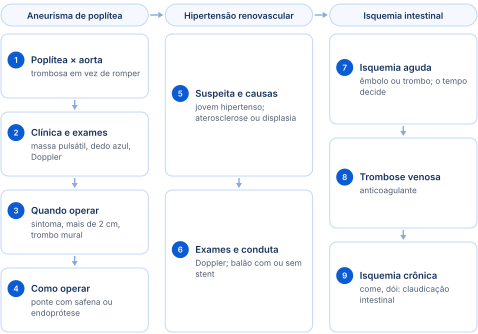
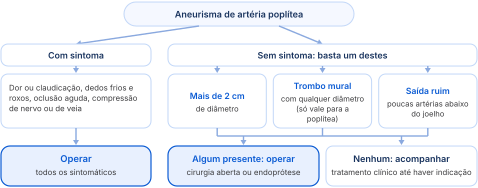
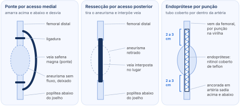
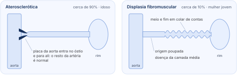
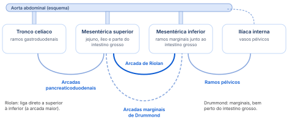

Pico de velocidade sistólica na renal
Acima de 180 cm/s.
O aneurisma que entope em vez de romper, a pressão alta que nasce de uma artéria renal estreita e o intestino que morre quando o sangue não chega a tempo.
Organizada a partir da aula, com a linguagem ajustada para estudo. A legenda de cores está na página 2.

É uma dilatação da artéria que passa atrás do joelho. Ao contrário do aneurisma da aorta, quase nunca rompe: o perigo é encher de coágulo, entupir ou soltar pedacinhos para o pé, e a perna pode ser perdida.
Numa sexta-feira à tarde, um homem de 80 anos foi ao consultório só para fazer o curativo de uma infecção numa perna. Na outra, a direita, tinha dor, frio, palidez e dormência em todos os dedos do pé, e ainda não tinha diagnóstico. Era um aneurisma de poplítea que tinha entupido de repente (oclusão aguda). Foi operado na mesma noite.
Tratar uma perna e não examinar a outra. O paciente veio pelo curativo de um lado e o aneurisma entupido estava no outro. “Aquela velha história: a gente trata uma coisa e não examina a outra.”
Os aneurismas se dividem em três grupos que não se misturam: os intracranianos (cerebrais), os da aorta e os periféricos, que são todos os outros: viscerais (esplênico, renal, mesentérico), de ilíaca e dos membros. Entre os periféricos, o da poplítea é o mais comum.
Na aorta, da valva aórtica até a bifurcação, o aneurisma abdominal responde por 75% dos casos. Mesmo presente em menos de 1% da população, ele mata mais de 150.000 pessoas nos Estados Unidos.
“Um rompe mais; esse trombosa mais.”
O Vascunet é um registro público de cirurgia vascular, concentrado na Europa e ligado à Sociedade Europeia de Cirurgia Vascular: 14 membros alimentam os dados, e o Brasil não participa. Nas operações de aneurisma de poplítea:
E 79,5% dos reparos foram por cirurgia aberta. O Brasil tem um pouco de tudo.
Nas pontes da cirurgia aberta, a veia ficou aberta por mais tempo (patência maior) que o enxerto sintético, embora a diferença estatística seja pequena. A preferida é a veia safena magna, que dura mais que as veias de outros lugares; a do braço pode servir, mas na maioria das vezes não tem diâmetro adequado.
Dobre uma mangueirinha de chuveiro bem pertinho: ela vira uma dobra e não passa nada. É o que o enxerto sintético faz na dobra do joelho. A veia encurva, mas não dobra; por isso dura mais.
A grande maioria é aterosclerótica, com os mesmos fatores de risco do infarto e do acidente vascular cerebral: tabagismo, hipertensão, dislipidemia, sedentarismo. A aterosclerose estraga a camada média e a íntima do vaso, que dilata em vez de entupir.
O maior temor é o fenômeno tromboembólico: isquemia, perda do membro e amputação. A trombose é a complicação mais comum, em cerca de 70% dos casos. A ruptura é rara (1 a 2%) e, quando acontece, também causa isquemia e exige reparo rápido.
Muitos pacientes não sentem nada. Quando sentem, é por falta de sangue na perna: dor ao andar, dedos frios e roxos. Atrás do joelho o pulso costuma ser difícil de achar; se ele pulsa forte e fácil, pense em aneurisma.
Sem tratamento, quase um quarto dos assintomáticos passa a ter sintoma em 1 ano, e quase três quartos em 5 anos. Por isso todo aneurisma é acompanhado, com tratamento clínico, até chegar a hora certa de operar, pesando risco e benefício, como em qualquer aneurisma.
Abaixo do joelho, a poplítea se divide em três artérias: tibial anterior, tibial posterior e fibular. Perder uma delas não tira o sangue da perna de uma vez. Os microêmbolos vão fechando ramo por ramo; quando um ramo passa a suprir dois territórios grandes, a perna começa a doer ao andar.
Na fossa poplítea, procure uma massa visível ou palpável. O cavo poplíteo é um lugar escondido, onde nem sempre se acha o pulso de pronto. No aneurisma, mal se encosta e já se sente uma massa pulsátil, tão grande que devolve o pulso na mão.
“Quando, num lugar desse, você sente pulsação muito ampla, muito fácil, desconfie que seja aneurisma.”
Todos os pulsos estão palpáveis, mas os dedos estão isquêmicos, roxos e gelados. O êmbolo é tão pequeno que passa pelas artérias grandes (não entope a tibial posterior) e só para nas arteríolas digitais e metatarsianas, na ponta do dedo.
Internado em jejum, foi operado à noite, por cirurgia aberta, com arteriografia na sala para tentar desentupir as artérias de baixo. Angiotomografia não entrou no planejamento: já se sabia onde estava entupido e onde estava pérvio, acima e abaixo.
Com sintoma, opera sempre. Sem sintoma, opera se o aneurisma passou de 2 cm, se tem coágulo grudado na parede (com qualquer tamanho) ou se já sobram poucas artérias abaixo do joelho.
Sintomático: é consenso, todos operam. O paciente do caso tinha dor, frio e oclusão aguda; não havia o que discutir.
Assintomático: há controvérsia. Alguns só operam acima de 2 cm. Mas o aneurisma de 2 cm ou menos com trombo mural tem alto risco de trombose e de embolia distal: com trombo, é cirúrgico em qualquer diâmetro.
“Trombo mural não indica cirurgia em aorta abdominal. Mas aqui indica! Aqui dá muita trombose e embolização.”
Levar o trombo mural para a aorta. Trombo mural é critério só na poplítea. Na aorta abdominal, o que indica cirurgia é o diâmetro ou o crescimento rápido, não o trombo.
Ou crescimento rápido: 0,5 cm em seis meses, 1 cm em um ano, ou mais.

Saída (em inglês, run-off) é por onde o sangue escoa depois da artéria. O assintomático com poucas artérias abaixo do joelho tem mau prognóstico: se não tratar, quando entupir o único vaso que sobrou, é amputação. As artérias de baixo já comprometidas são consequência da mesma doença, então se trata mais cedo, para preservar o membro, mesmo abaixo de 2 cm.
Há dois caminhos. Na cirurgia aberta, amarra-se a artéria acima e abaixo do aneurisma e faz-se uma ponte com a veia safena. Na endovascular, um tubo coberto (a endoprótese) entra por um furo na virilha e forra a artéria por dentro.
Ponte por acesso medial. Ligadura acima e abaixo do aneurisma, que fica sem fluxo, e uma ponte (bypass, desvio: tudo é sinônimo) da femoral distal até a poplítea abaixo do joelho, com a veia safena magna retirada do próprio paciente. As incisões ficam na face medial da coxa e da perna, não atrás do joelho. Parece simples, e foi a cirurgia do caso.
Ressecção por acesso posterior. O paciente fica de bruços e se faz um corte grande atrás do joelho; o aneurisma é retirado e um pedaço de veia é interposto. Anatomicamente fica melhor, mas é muito mais agressiva. É a saída para o aneurisma gigante, que faz efeito de massa: há paciente que chega com trombose venosa profunda por compressão, ou com formigamento e perda de movimento do pé por compressão de nervo.
Endoprótese. Punção anterógrada da femoral perto da virilha, fio-guia atravessando o aneurisma; a endoprótese é posicionada e desencapada, e sai o introdutor. Quando vai tudo bem, não leva meia hora.

Esquema simplificado. A ponte por acesso medial foi a cirurgia do caso.
Na poplítea, o padrão-ouro é a cirurgia aberta, ao contrário da aorta abdominal, em que o endovascular é a melhor opção. Ainda assim, a endoprótese pode substituir a cirurgia aberta e, em algumas situações, é até melhor. A escolha depende do paciente:
“Não por facilidade, é porque é melhor para o paciente. Apesar de ser mais agressiva, ela traz mais benefícios.”
Stents de arame de nitinol (níquel e titânio), muito flexíveis: acompanham o joelho dobrando e esticando.
Politetrafluoretileno, o teflon, de alta qualidade: não desfia como o veda-rosca de torneira e é feito para durar a vida inteira.
Ela vem comprimida dentro de um cateter fino; no lugar certo, é desencapada e se conforma ao vaso, virando um túnel por dentro dele. A Viabahn, da Gore (a mesma do tecido de algumas botas de neve), tem heparina no tecido, o que dificulta a coagulação e a mantém aberta por mais tempo.
Nos estudos, cirurgia aberta e endovascular são equivalentes, sem diferença estatística. As variáveis antes vistas como decisivas (com ou sem isquemia, eletiva ou urgência, aneurisma na linha do joelho ou não) vêm caindo por terra.
Tudo o que fica fora da dobra do joelho dura mais; o que atravessa a dobra se desgasta mais rápido e pode ocluir por dobra. A endoprótese é crucificada como a que dá mais isquemia, mas a ponte aberta também sofre com a dobra.
Um paciente operado com ponte aberta ficou muito tempo de cócoras. Quando levantou, não sentia mais o pé: a ponte tinha ocluído.
Antes, trombose era impedimento para a via endovascular; hoje não. Dá para aspirar o coágulo, fazer fibrinólise (derreter o coágulo agudo com fibrinolítico) ou fazer uma pequena abertura, retirar o trombo com o cateter de Fogarty e seguir com a endoprótese.
Ácido acetilsalicílico e clopidogrel; depois, um só (geralmente o ácido acetilsalicílico, mais simples), um por dia.
Na cirurgia aberta não precisa: faz-se a ponte e o paciente fica livre desse remédio. É mais uma desvantagem do endovascular.
Parar o antiagregante. “Você para com o antiagregante, ela entope.” Foi mostrado que quem para de tomar entope; é preciso manter antiagregante ou anticoagulante.
Depois do primeiro ano, a cada 6 meses ou a cada ano: a cirurgia pode deteriorar ou complicar.
Uma artéria do rim estreita deixa o rim com pouco sangue. Ele reage como se faltasse pressão e libera renina, que sobe a pressão do corpo todo. É pressão alta com causa: tratando a artéria, a pressão pode curar.
As duas podem se somar: um hipertenso de longa data pode, por azar, desenvolver hipertensão renovascular e piorar a pressão. Na coarctação da aorta, falta sangue não só para as pernas, mas para as vísceras abaixo do estreitamento, e o corpo compensa subindo a pressão para receber um pouco mais.
A hipertensão renovascular é a segunda causa de hipertensão arterial secundária e está em 5 a 6% dos hipertensos. A maioria é aterosclerótica. Na turma ninguém tomava remédio para pressão: hipertensão em alguém de 20 ou 30 anos, ou pouco mais, faz desconfiar de causa secundária.
“Quando você vê alguém na faixa etária de vocês com pressão alta muito precoce, sempre tem que desconfiar que pode ser secundária a alguma doença.”
“Doutor, eu sempre meço no braço direito, porque no esquerdo dá muito alto.” Errado: vale o braço com a pressão mais alta. Nenhuma doença aumenta a pressão de um braço; o que existe é estenose ou oclusão da subclávia, que diminui o fluxo e a pressão daquele lado.
A partir daí, investigue o que está acontecendo.
A pressão alta é secundária à isquemia do rim, geralmente por estenose grave ou obstrução de uma ou mais artérias renais. O rim em si não está doente: ele sente a falta de sangue e tenta aumentar a pressão.
Se o rim fosse retirado, a pressão alta pararia; mas esse não é o objetivo do tratamento.
A renovascular tem duas causas: a aterosclerótica, quase 90%, e a displasia fibromuscular, cerca de 10%. Doenças raras que inflamam, comprimem, traumatizam ou deixam hipoplásica uma artéria ramo da aorta, como a arterite de Takayasu, são entidades à parte.

Na aterosclerótica, é como no infarto: gordura acumulada ao longo da vida, estenose e, um dia, oclusão. Sem cuidado, a estenose grave leva à perda completa da função renal.
Conversar e examinar: o que o paciente toma, como a pressão evoluiu, a pressão nos dois braços, se está tudo correto. Às vezes, pedir medidas no posto ou em casa: o aparelho doméstico dá medidas mais fiéis que o consultório, onde o estresse sobe a pressão. Os exames complementares são de imagem.
A aterosclerose que causa a doença arterial obstrutiva periférica também pode atingir vasos viscerais, como a artéria renal. O sopro abdominal das renovasculares vem da estenose da artéria renal, da aorta ou das mesentéricas.
O Doppler mede a velocidade do sangue na artéria do rim: se corre rápido demais, é porque está estreita. Hoje quase tudo se trata por cateterismo: balão e stent na aterosclerose, só balão na displasia.
O tecnécio é um isótopo radioativo de duração efêmera: perde a radioatividade em segundos, é bem controlado e inócuo para o paciente, menos perigoso que um raio X, ao contrário do que se pensa. O exame mostra a captação nos rins, nas vias urinárias e na bexiga: o rim que capta mal é, provavelmente, o do lado da estenose.
É o exame do dia a dia. Com o transdutor convexo no abdome, perto das costelas, na altura da primeira e da segunda vértebras lombares, procura-se a saída das artérias renais da aorta (pode haver mais de uma para cada rim: as artérias polares) e avaliam-se a forma e a velocidade do fluxo.
Na renal, geralmente 100 a 120 cm/s: pouco acima da aorta.
Precisa das duas coisas ao mesmo tempo.
Acima de 180 cm/s.
Velocidade da renal dividida pela da aorta acima de 3,5.
No trecho estreito o sangue esguicha e faz picos de velocidade: na renal, três vezes e meia mais rápido que na aorta. Cada artéria tem seu corte, pesando risco e benefício: na carótida, o procedimento entra a partir de 70%; na renal, a partir de 60%. Acima do corte, já se está perdendo o momento; abaixo, corre-se o risco sem ter o benefício.
Um critério só não basta. Se a velocidade passou de 180 cm/s mas a relação não passou de 3,5 (ou o contrário), a estenose é considerada menor que 60%.
No cateterismo, o cateter sobe pela femoral até a aorta e entra no “biquinho” da renal. Estenose grave só no óstio, com a artéria normal adiante, é aterosclerose: a placa da aorta se insinua no óstio e não progride. Às vezes a origem já está ocluída, com a artéria renal íntegra lá na frente. A angiorressonância e a angiotomografia com reconstrução tridimensional mostram também os outros ramos: tronco celíaco, artérias esplênica e hepática, mesentérica superior e as duas renais.
Todos recebem tratamento clínico, com controle adequado da pressão. O objetivo é manter a função renal e controlar a pressão: com o rim já sem função, em diálise, revascularizar não adianta.
O stent da renal vem montado no balão: o balão infla, o stent fica, o balão murcha e sai. É um stent rígido, expansível por balão, duro como um clipe de papel: se dobrar, não volta. É o oposto da endoprótese flexível da dobra do joelho.
Todo cateterismo exige cuidado com o acesso: não deixar sangrar no pós-operatório, porque pode dar grandes hematomas; evitar oclusão e trombose; e deixar a artéria como estava antes da intervenção.
Antes, sem material bom para angioplastia, operava-se aberto: autotransplante do rim (retirado e implantado em outro lugar), reimplante da artéria renal depois de soltá-la e limpá-la, ou endarterectomia (abrir a aorta e a renal, limpar por dentro e fechar com remendo de pericárdio bovino). Tudo isso ainda é possível, mas é uma cirurgia grande: cerca de 3 horas, terapia intensiva, corte grande, íleo paralítico e dias sem comer. Com angioplastia e stent, vai-se para casa no mesmo dia. Hoje quase a totalidade é endovascular.
Um coágulo entope de repente a artéria que leva sangue ao intestino. Ele pode ter vindo do coração ou se formado numa artéria já doente. Sem sangue, o intestino morre em poucas horas: quem chega cedo à cirurgia sobrevive.
Isquemia é falta de oxigenação; isquemia intestinal é a falta de oxigenação no tecido do intestino. É a mesma aula de oclusão arterial aguda, trombótica ou embólica, e de trombose venosa, só que no território intestinal. Pode ser aguda (dor e, em um ou dois dias, morte) ou crônica (dor que se arrasta por anos, com emagrecimento, até alguém pensar em doença circulatória do intestino).
O intestino precisa de alto fluxo. Quando a artéria entope de repente, não dá tempo de outros vasos suprirem: vêm isquemia e necrose intestinal, com alta mortalidade. Sem diagnóstico, talvez não haja como salvar o paciente.
O sintoma é dor, e quase todo mundo já teve dor de barriga ou cólica: não dá para abrir a barriga de todos. A barriga é uma caixinha de surpresas, e na mulher somam-se as anexites, as cistites e outras doenças ginecológicas. A idade ajuda: num jovem a chance é remota, embora não impossível; pense nela no idoso e no paciente de risco.
O mesmo êmbolo que entope a perna pode entrar numa mesentérica no meio do caminho (dor abdominal), no rim ou subir ao cérebro (acidente vascular cerebral por êmbolo cardíaco).
O coração perde a sequência de sístole e diástole e bate em salvas: não enche nem esvazia direito o átrio e o ventrículo, e o sangue que sobra coagula com facilidade. Por isso a maioria desses pacientes é anticoagulada. Hoje a ablação do foco da arritmia por cateterismo, antes só para jovens, é feita em qualquer idade e, revertida a arritmia, o anticoagulante pode sair. E os novos anticoagulantes orais são muito mais seguros que os antigos: raramente fazem sangrar.
Três vasos irrigam as vísceras: o tronco celíaco, a artéria mesentérica superior e a artéria mesentérica inferior. Perder um deles aos poucos, por aterosclerose, costuma ser bem tolerado: o prognóstico é melhor para quem foi desenvolvendo colaterais. O problema é a oclusão abrupta, por êmbolo ou trombose aguda. Os três se comunicam por colaterais, as anastomoses fisiológicas, que dão tempo para socorrer obstruções crônicas e agudas.

“Essas colaterais vocês devem guardar, porque isso cai em qualquer prova de concurso. Qual que é a arcada que comunica a mesentérica superior e inferior? Arcada de Riolan.”
Oclusão da mesentérica superior: perde-se o jejuno e o íleo, boa parte do intestino delgado, e uma parte do intestino grosso.
O toque retal pode vir com sangue, por isquemia do cólon, mas isso não é patognomônico. Como clínico, encaminhe a um serviço de referência cirúrgica; como cirurgião que recebe o paciente, não dá para esperar: é cirurgia de imediato.
“Peritonite é igual a cirurgia. Ah, e se for apendicite? Cirurgia. Se for anexite? Cirurgia. Se for sepse por isquemia aguda do intestino? Cirurgia.”
Confiar na dor que melhora. Na fase 1, a dor pode melhorar em 1 a 2 horas e a barriga continua mole: ainda não parece grave, e é a fase em que dá para salvar. Na fase 2, qualquer um faz o diagnóstico, mas a maioria morre.
A angiotomografia é hoje o melhor exame. A arteriografia mesentérica exige sala e equipe de hemodinâmica, então fica para quem ainda não está na fase 2: o paciente com suspeita e exames sugestivos, mas sem peritonite, em quem às vezes dá para recuperar o fluxo. A tomografia (e também o raio X) mostra nível hidroaéreo e distensão das alças; o sangue, leucocitose e alteração de enzimas.
Há relatos de que o propofol, usado na indução anestésica, ajude o intestino a sobreviver à isquemia aguda; não é obrigatório nem padrão reconhecido.
Na arteriografia, a mesentérica superior aparece com uma parada súbita (um “stop”), sem fluxo abaixo, e as colaterais tentando suprir o intestino. Desentupida antes da necrose, o intestino se mantém vivo sem ressecção.
“É igual você carimbar a sentença de morte no paciente você deixar um intestino podre desse jeito.”
Trombose aguda: pode ser o paciente que já tinha claudicação intestinal (das três artérias, duas entupidas e uma ruim) e a última fechou de vez: corre-se para desentupir. Como é agudo, parte do intestino pode estar necrosada; hoje não se abre só para olhar: faz-se uma laparoscopia (um furo, gás carbônico e câmera) e, se houver necrose, abre-se. Desentope-se, faz-se angioplastia quando possível e resseca-se o que estiver necrosado.
Embolia: mais catastrófica, porque o intestino nunca teve isquemia. Faz-se a desobstrução, mas geralmente o paciente chega na fase avançada.
“Olha, provavelmente é uma isquemia intestinal aguda. Ela tem chance de ser operada agora, mas é baixa a chance de sobreviver operando agora. Se não operar agora, não vai sobreviver. É agora ou nunca.”
Em isquemia, tudo depende do tempo até o diagnóstico e a conduta, e da extensão da trombose: a segmentar recupera melhor; a longa leva a enterectomia (retirada de intestino) maior. Aos 89 anos, uma enterectomia extensa não se sobrevive: a cirurgia é agressiva e, depois, sem intestino para absorver, o paciente depende de nutrição parenteral, com nutrientes pela veia por um cateter de longa permanência.
É a “trombose venosa profunda do intestino”: o sangue chega pela artéria, mas não volta pela veia, e o intestino incha. É a forma mais branda, e na maioria das vezes só o anticoagulante resolve.
O edema das alças do delgado provoca extravasamento serossanguíneo, com líquido na cavidade, e a translocação bacteriana pode levar à sepse.
Na fase inicial, como na perna, o anticoagulante sozinho costuma bastar. Na fase hiperaguda, muito extensa, pode-se derreter o coágulo com fibrinólise; com ou sem fibrinolítico, o paciente fica anticoagulado. O coágulo pode ser dissolvido, removido ou aspirado.
“Igual à trombose de perna, igual à trombose venosa de qualquer lugar, o primeiro tratamento de escolha é o anticoagulante, e é o que mais funciona.”
A fibrinólise não entra pela veia. O fibrinolítico é injetado na artéria mesentérica superior: o sangue com o remédio passa pelas artérias e volta muito rápido pelas veias, onde age.
São estados de hipercoagulabilidade, comuns em quem tem trombose venosa: quando ela aparece, investigue.
O sangramento é previsível e pode ser uma hemorragia cerebral grave, com desvio da linha média. O fibrinolítico dissolve coágulos de até 30 dias, então pese a cirurgia recente: depois de cirurgia de joelho ou de mama, o hematoma se drena e passa; depois de cirurgia neurológica ou cardíaca, ele mata em vez de ajudar. Só em casos muito criteriosos.
“Você pode até justificar, mas você vai responder perante a lei por tudo o que você fizer. O ato médico você responde.”
É a aterosclerose fechando aos poucos as artérias do intestino. Comer passa a doer, a pessoa fica com medo de comer e emagrece muito. Quando procura o médico, das três artérias, duas já fecharam.
É a doença arterial obstrutiva periférica do intestino: claudica o intestino, não a perna. Rara (5% das isquemias intestinais), gradual e progressiva, confunde-se com outras doenças.
“Pior do que Mounjaro, que bariátrica: em um mês perde 30, 40 kg, fica um fiapo.”
Quem chega com perda de peso extrema já tem duas das três artérias ocluídas e a última com estenose grave; o que o mantém vivo são as colaterais (pancreaticoduodenais, Drummond e Riolan).
Por ser aterosclerótica, o tratamento clínico é o da perna, para prevenir a isquemia aguda: parar de fumar, controlar a pressão e a dislipidemia (triglicerídeos e colesterol), dieta e exercício regular. Até certo ponto, resolve.
Doença clinicamente limitante, ou lesão arterial com estenose acima de 70%.
Pode ser cirurgia aberta (laparotomia com endarterectomia, ou ponte com safena ou tubo sintético) ou angioplastia com stent, hoje a mais usada: o material melhorou e agride menos. O cateter pode vir pelo braço; o balão abre o stent, murcha e sai, e o stent fica com cerca de 0,5 cm para dentro da aorta.
Há cateteres de aspiração dos finos, para coronária, aos calibrosos (16 French), para embolia pulmonar maciça. Os antigos aspiravam sem parar e, fora do coágulo, puxavam sangue: havia paciente que precisava de transfusão. Os novos travam no fluxo livre e puxam forte no coágulo. O aparelho sobe de R$ 30.000 para R$ 70.000 e o convênio não quer pagar, mas, bem indicado, dá para justificar.
Poplítea: o aneurisma periférico mais comum; homem idoso, bilateral e com aorta em 50 a 60%.
Aorta rompe; poplítea trombosa (cerca de 70%; ruptura, 1 a 2%). O medo é perder a perna.
Opera todo sintomático; sem sintoma, se mais de 2 cm, trombo mural (qualquer diâmetro) ou saída ruim.
Padrão-ouro na poplítea: cirurgia aberta (ligadura e ponte com safena). Na aorta, o endovascular.
Endoprótese: dois antiagregantes por no mínimo 6 meses, depois um para sempre. Parou, entope.
Renovascular: segunda causa de hipertensão secundária, 5 a 6% dos hipertensos; pense no jovem.
Vale o braço com a pressão mais alta; diferença de 20 mmHg ou mais, investigue.
Aterosclerótica (90%, idoso): só o óstio. Displasia (10%, mulher jovem): poupa a origem, colar de contas.
Doppler renal: pico acima de 180 cm/s e relação acima de 3,5, juntos: estenose de 60% ou mais.
Aterosclerótica: angioplastia com stent. Displasia: angioplastia, na maioria sem stent.
Isquemia intestinal: o sintoma é dor, que todo mundo tem; pense nela no idoso de risco.
Embólica: 90% do coração (arritmia, fibrilação atrial). Trombótica: idoso com aterosclerose difusa.
Colaterais: pancreaticoduodenais (celíaco e superior); Riolan e Drummond (superior e inferior).
Fase 1: dor periumbilical, abdome mole. Fase 2: peritonite é cirurgia; exames alterados, irreversível.
O tempo decide: operado na fase 1, o intestino se salva; transferido em peritonite, o paciente morre.
Trombose venosa mesentérica: anticoagulante é a escolha; fibrinólise pela artéria, com critério.
Crônica: claudicação intestinal (come, dói; jejum, passa), medo de comer, emagrecimento; 5% dos casos.
Crônica: arteriografia é o padrão-ouro e o Doppler enxerga bem; tratar estenose acima de 70%.